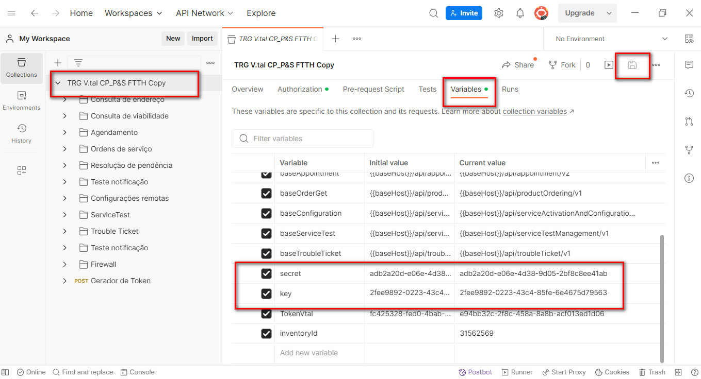
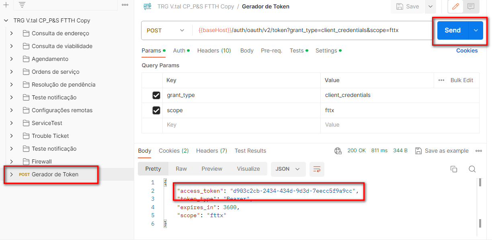

! Video Teórico
! Passo a Passo em Wiki
Para gerar o token de acesso é necessário utilizar a API de autenticação conforme imagem:
1. Abra o postman;
2. Utilize a Collection enviada pelos nossos colaboradores;
3. Selecione a opção "Variables" dentro da Collection;
4.Insira o Client Key e o Client Secret;
5.Clique em Save (Disquete)
6.Vá para o "Gerador de Token";
7.Clique em Send, o token será automaticamente copiando e inserido em "Variables", vistas anteriormente.